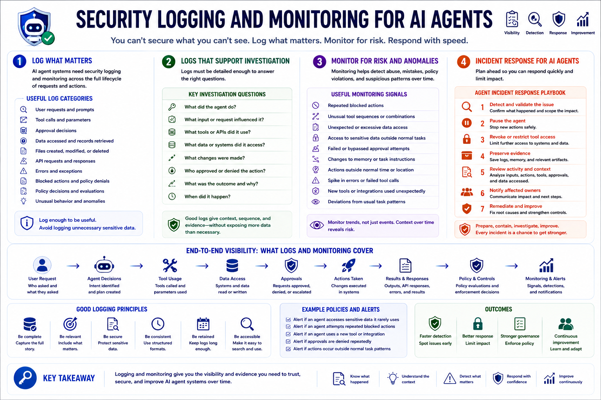

AI Agent Security
Logging, Monitoring, and Incident Response
Connecting to LMS... Progress: in progress
Version 1.0 | Date: 2026-06-16 | AI agent security guidance evolves quickly. Verify current recommendations against official project, vendor, and security guidance.

Narration
AI agent systems need security logging and monitoring. Useful logs may include user requests, tool calls, approval decisions, data accessed, files modified, API responses, errors, blocked actions, policy decisions, and unusual behavior.
Logs should avoid unnecessary sensitive data, but they must be detailed enough to support investigation. Security teams need to answer questions such as what the agent did, what input influenced it, what tools it used, what data it accessed, and who approved the action.
Monitoring helps detect abuse, mistakes, policy violations, and suspicious patterns over time. Useful signals may include repeated blocked actions, unusual tool sequences, unexpected data access, failed approvals, changes in memory, and actions outside the normal task pattern.
Incident response planning should include agent-specific questions. Teams should know how to pause an agent, revoke tool access, preserve logs, review memory and task history, notify affected owners, and improve controls after an incident or near miss.